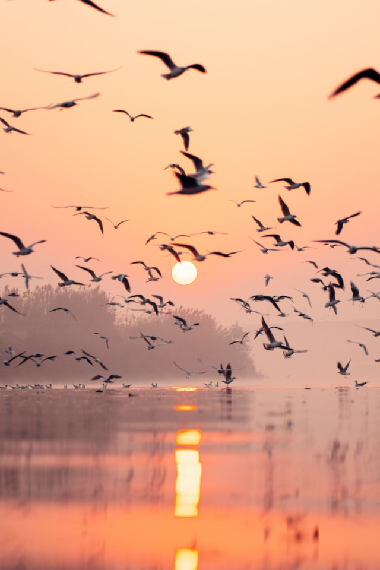
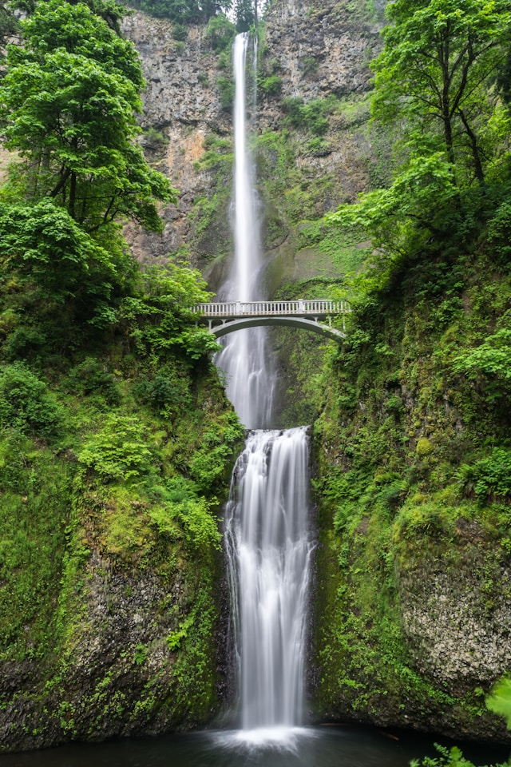
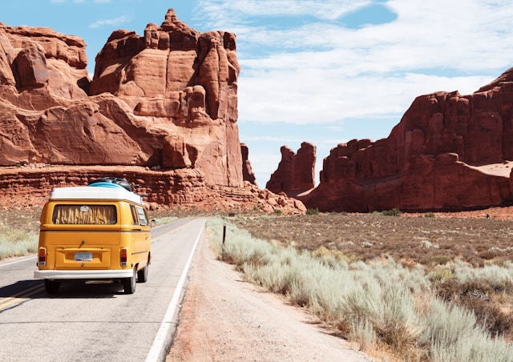
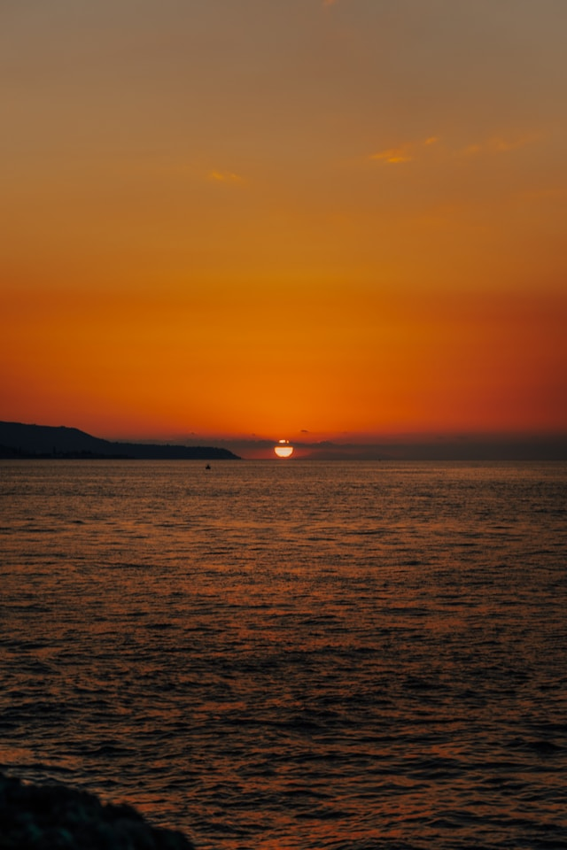
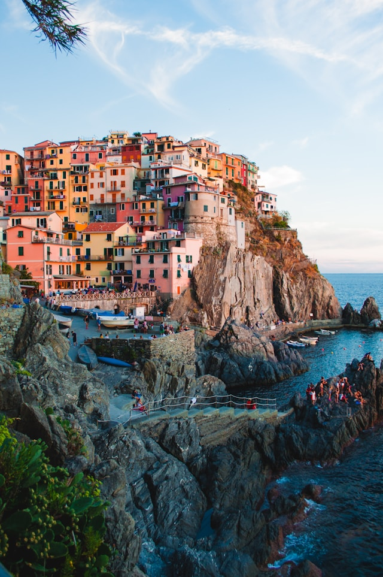
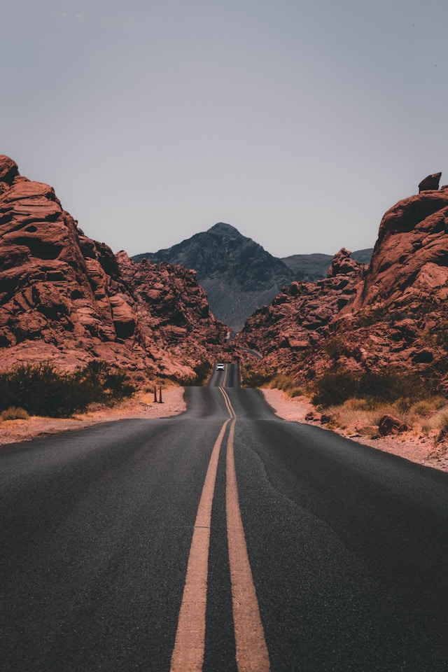
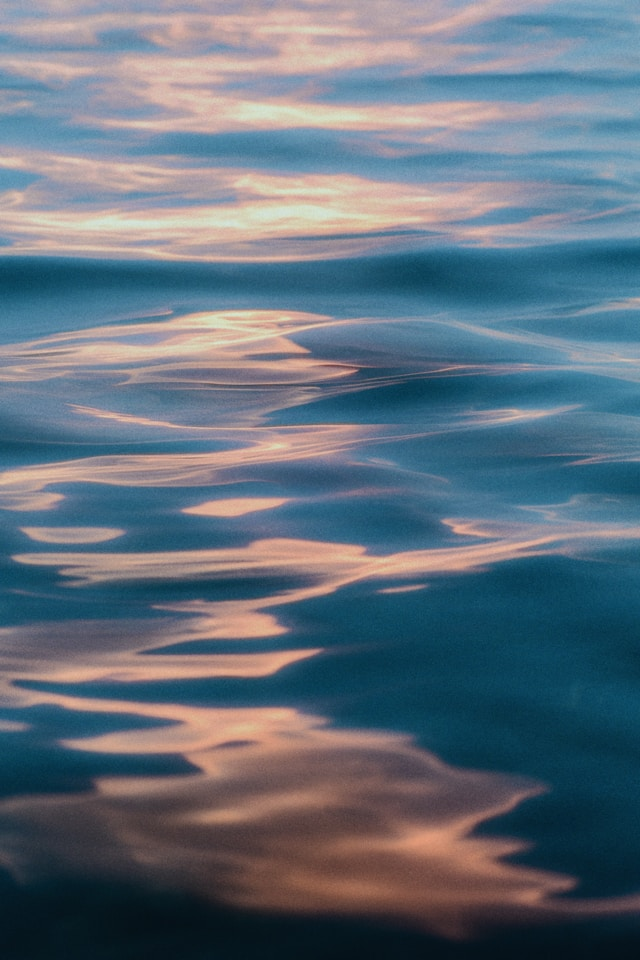
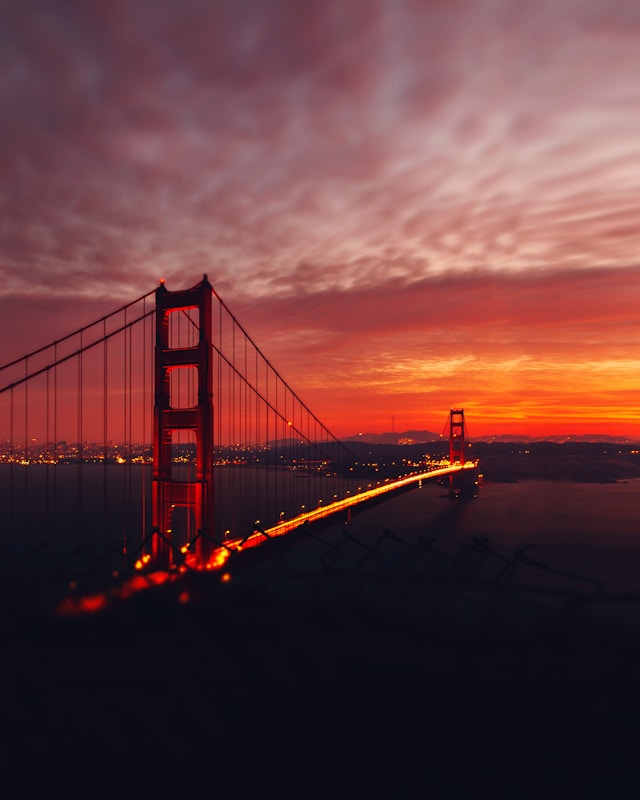

この写真は、秋の早朝、静かな山間の湖で撮影されたものです。霧が湖面に薄く漂い、紅葉した木々が水面に鮮やかに映り込んでいます。遠くには雪をかぶった山々がそびえ、朝日に照らされた雲がオレンジ色に染まっています。写真の中心には、小さな木製のボートが浮かんでおり、無人の状態が一層の静寂を感じさせます。この作品は、自然の持つ静けさと美しさを見事に捉えた一枚で、見る人に深い安らぎを与えます。








Unsplashの素材を使用しています。